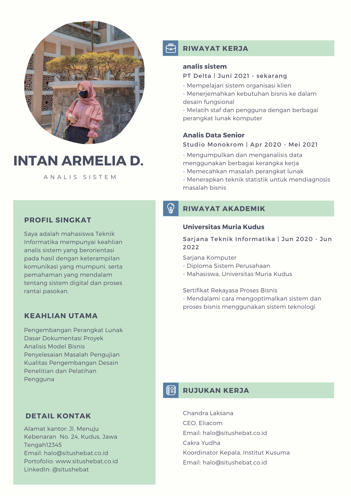

Selamat Datang di Praktikum Pemrograman Web
Membuat program dengan HTML dan CSS
hi everyone!!! tugas ini dibuat untuk memenuhi tugas akhir (UAS) Pemrograman Web. Membuat personal branding, Biodata, CV dan lain-lain.
BIODATA
- Nama : Intan Armelia
- Nim : 202051030
- Kelas: E- TI
- Umur : 19 tahun
- Alamat: Kudus
- Hobi : Menyanyi

MY CV
Berikut ini adalah CV saya:


1. SD

2. SMP
3. SMA
4. UMK
© 2022. intanarmelia. All Rights Reserved.